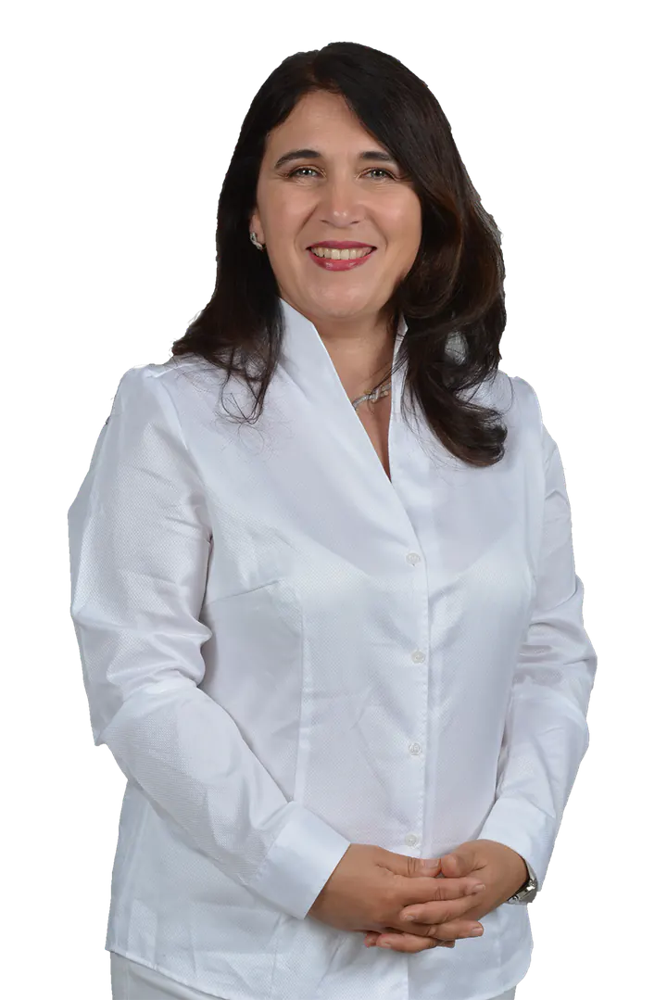

Praxis zum Schloss Hausarztpraxis · Berlin-Charlottenburg
Nalan Bagci-Kaikis, Fachärztin für Allgemeinmedizin
Hausärztliche Versorgung an der Schloßstraße 21 – fachärztlich, mit Erfahrung aus Lehre und Forschung an der Charité. Naturheilverfahren ergänzen die Behandlung, wo es ärztlich sinnvoll ist.
Sie werden zu Doctolib weitergeleitet.

Nalan Bagci-Kaikis · Praxis zum Schloss
- Facharzt
- Fachärztin für Allgemeinmedizin
- Lehre
- Lehrärztin · zuvor Lehre und Forschung an der Charité
- Zusatzbezeichnungen
- Akupunktur · Naturheilverfahren
- Sprachen
- Deutsch · English · Türkçe
01 Unser Verständnis
Wir verstehen hausärztliche Medizin als eine auf den einzelnen Menschen und sein Umfeld bezogene, dauerhaft angelegte Arzt-Patienten-Beziehung.
Nalan Bagci-Kaikis
Fachärztin für Allgemeinmedizin · Lehrärztin
Nalan Bagci-Kaikis ist Fachärztin für Allgemeinmedizin mit den Zusatzbezeichnungen Akupunktur und Naturheilverfahren. Sie studierte an der Freien Universität, der Humboldt-Universität und der Charité Berlin und war am Institut für Allgemeinmedizin der Charité in Lehre und Forschung tätig. Ihre naturheilkundliche Ausbildung absolvierte sie am Immanuel Krankenhaus Berlin. Seit 2019 führt sie ihre eigene hausärztliche Praxis.
02 Leistungen
Hausärztliche Versorgung zuerst – Naturheilkunde als ärztliche Ergänzung.
Die Grundlage ist die hausärztliche Versorgung: Vorsorge, Diagnostik und Behandlung durch eine Fachärztin für Allgemeinmedizin.
Hausärztliche Versorgung
Vorsorge, Impfungen, Diagnostik und Behandlung – durch die Fachärztin für Allgemeinmedizin.
- 01Vorsorge und Check-upCheck-up, Hautkrebs-Screening, Krebsfrüherkennung, Jugenduntersuchungen und geriatrisches Basisassessment.
- 02Impfungen und ReisemedizinImpfberatung nach STIKO, Auffrischungen und reisemedizinische Beratung vor Auslandsreisen.
- 03Diagnostik und BehandlungDiagnostik, Behandlung akuter und chronischer Erkrankungen und psychosomatische Grundversorgung.
Naturheilkunde, ärztlich ergänzt
Ergänzend zur hausärztlichen Versorgung bietet die Praxis naturheilkundliche Verfahren an. Ob eines davon für Sie infrage kommt, entscheiden wir gemeinsam – auf Grundlage einer ärztlichen Diagnose.
- 01AkupunkturFeine, sterile Nadeln an definierten Punkten – ärztlich verantwortet, ergänzend zur hausärztlichen Behandlung.
- 02NeuraltherapieGezielte Injektionen eines örtlichen Betäubungsmittels – ein ärztliches Injektionsverfahren.
- 03Schröpfen (Hacamat, Hijama)Behandlung mit Unterdruck über Schröpfgläser – blutig, trocken oder als Schröpfmassage.
- 04Infusionen und AufbaukurenVitamine, Mineralstoffe und Spurenelemente als Infusion oder Injektion – nach ärztlicher Abklärung.
Viele dieser Leistungen übernehmen die gesetzlichen Krankenkassen nicht. Über mögliche Kosten informieren wir Sie vorab. Die Beschreibungen erläutern die Verfahren; sie sind kein Heilversprechen.
03 Termin
Termin in drei Schritten
Termine buchen Sie online über Doctolib – rund um die Uhr. Oder Sie rufen uns während der Sprechzeiten an.
- 1
Termin auswählen
Wählen Sie bei Doctolib den passenden Anlass und eine freie Zeit, zum Beispiel Sprechstunde, Vorsorge, Impfung oder Akupunktur.
- 2
Bestätigung erhalten
Doctolib bestätigt Ihren Termin. Diagnosen oder Befunde müssen Sie bei der Buchung nicht angeben.
- 3
In die Praxis kommen
Bringen Sie bitte Ihre Versichertenkarte und, falls vorhanden, Ihren Impfausweis und aktuelle Befunde mit.
Sie werden zu Doctolib weitergeleitet. Die Online-Buchung ist kein Notfallweg. Bei akuten Beschwerden rufen Sie bitte an. Außerhalb der Sprechzeiten erreichen Sie den ärztlichen Bereitschaftsdienst unter 116 117, bei Lebensgefahr den Notruf 112.
04 Sprechzeiten & Anfahrt
Sprechzeiten
| Montag | 9–12 & 15–17 Uhr |
|---|---|
| Dienstag | 9–12 Uhr |
| Mittwoch | 9–12 Uhr |
| Donnerstag | 9–12 & 15–18 Uhr |
| Freitag | 9–12 Uhr |
Wir vergeben feste Termine. Bitte vereinbaren Sie auch bei akuten Beschwerden vorher einen Termin – am besten telefonisch.
Schloßstraße 21
14059 Berlin-Charlottenburg
- Telefon
- 030 322 36 12
- Zugang
- Ebenerdig oder mit Aufzug erreichbar
- Versicherung
- Gesetzlich und privat Versicherte, Selbstzahler
Hinweise zu Bus, Bahn und Parken folgen